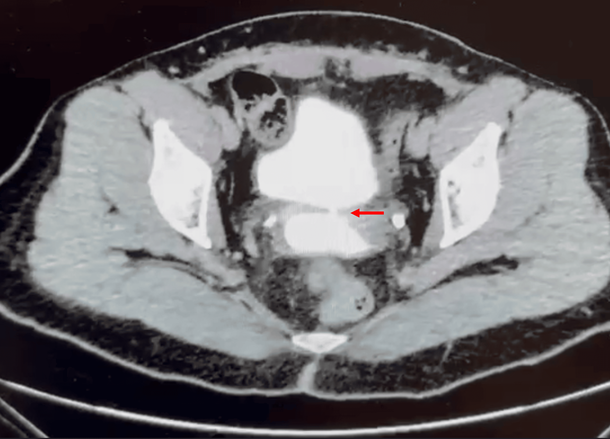
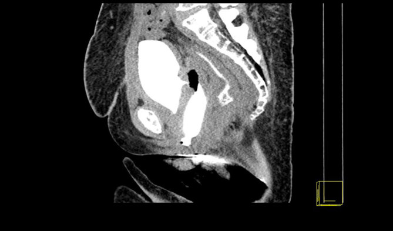

Página 2 · Parte 1 · Fístulas genitais
Não complicada ou complexa: quem causou decide o prognóstico
Duas fístulas do mesmo tamanho, no mesmo ponto da mesma parede. Uma fecha sozinha com uma sonda em três semanas. A outra dá trabalho por meses e às vezes recidiva. O que separa as duas não é a fístula — é o que a abriu.
Duas categorias, e quem decide é a causa
As fístulas vesicovaginais classificam-se em não complicadas e complexas, e essa divisão é a que orienta prognóstico e abordagem. Repare no critério: não é o tamanho, não é a localização, não é o tempo de evolução — é a origem. Duas fístulas idênticas na cistoscopia podem cair em categorias opostas conforme a história da paciente, e a razão fica clara no fim deste raciocínio: a causa determina a qualidade do tecido ao redor do trajeto, e é o tecido, não o buraco, que decide se o reparo vai pegar.
Não complicadas: a fístula que a cirurgia abriu
Não complicadas são as que resultam de cirurgia prévia ou de trauma. Entre as cirurgias, a causa é disparado a histerectomia — nenhuma outra chega perto. E aqui entra o primeiro detalhe fino, que a banca usa: quando se pensa em fístula vesicovaginal, ela costuma resultar de histerectomias convencionais, não das radicais. A razão é anatômica e vai ser fechada adiante: a histerectomia convencional não disseca o ureter, mas trabalha encostada na bexiga, e é a cúpula vesical que entra na linha de fogo no encerramento do fundo de saco vaginal. O restante da lista de causas não complicadas é nominal e vale item a item: fístula pós cirurgia de correção de prolapso ↗A8; pós cirurgia de correção de incontinência urinária ↗A7; pós biópsia vaginal; pós biópsia vesical; trauma penetrante; trauma de bacia. Sete portas de entrada, todas com uma coisa em comum — foi um gesto instrumental que abriu o caminho, num tecido que, fora daquele ponto, está bem vascularizado e íntegro.
Para dimensionar o peso da porta principal: nos países desenvolvidos, 80-90% das fístulas vesicovaginais são complicação de cirurgia pélvica, e os procedimentos ginecológicos respondem por cerca de 75% delas. A histerectomia, abdominal ou vaginal, complica com fístula vesicovaginal em 0,5-2% dos casos. No Brasil, o cenário é o mesmo: a causa mais frequente é a iatrogênica pós-histerectomia. É um número pequeno por procedimento e enorme em volume absoluto — e é exatamente essa aritmética que faz da histerectomia a resposta certa quando o enunciado pede a causa mais comum.
A ponte incômoda: as cirurgias que se indica são a causa número um
Vale parar um segundo nessa lista, porque ela é desconfortável e por isso mesmo memorável: a cirurgia de incontinência ↗A7, a cirurgia de prolapso ↗A8 e a histerectomia — os três procedimentos que se aprende a indicar com segurança — são, eles próprios, a causa número um desta complicação. Não é argumento contra indicá-los; é a razão pela qual a fístula vesicovaginal é uma doença essencialmente iatrogênica no mundo desenvolvido, e a razão pela qual toda perda vaginal contínua no pós-operatório de cirurgia pélvica merece investigação ativa em vez de tratamento empírico de corrimento. Quem indica precisa reconhecer.
Complexas: parto, radioterapia, câncer avançado
São consideradas complexas as fístulas que resultam de parto; de radioterapia; e de câncer avançado. Cada uma tem um cenário típico. No braço obstétrico, o cenário é a intercorrência obstétrica isquêmica que não foi adequadamente identificada — um trabalho de parto prolongado em que a apresentação comprime a parede anterior contra a sínfise por horas, sem que a lesão vascular seja reconhecida no momento. No braço oncológico, o cenário é o câncer pélvico avançado; e trazido para a mulher, o exemplo típico são os cânceres de bexiga mais avançados, em que a própria invasão tumoral rompe a barreira entre os dois lúmens. Note que nenhuma dessas três causas envolve um instrumento cortando a parede. É por isso que elas formam um grupo à parte.
Por que "complexa" — a isquemia
O adjetivo não é burocrático, e a cadeia que o justifica precisa ser guardada elo a elo: nesse contexto normalmente há trauma vascular, e é o processo isquêmico decorrente dele que explica a maior complexidade dessa fístula. Desdobrando: trauma vascular → isquemia → tecido que cicatriza mal → fístula de manejo mais difícil. O ponto essencial é que, na fístula complexa, o problema não termina nas bordas do trajeto. Existe um território ao redor que perdeu perfusão — e território sem perfusão não cicatriza, não sustenta sutura e não responde à derivação urinária. A fístula é só a parte visível de uma área doente. Guarde esse raciocínio: ele é o que vai justificar, mais adiante, esperar de três a seis meses antes de operar, e é o que vai explicar por que a fístula actínica é a que mais exige paciência.
Os dois modos de abrir a mesma comunicação
Existem, portanto, dois mecanismos fisicamente distintos produzindo o mesmo achado. O primeiro é a lesão direta da parede: no ato cirúrgico, a bexiga é seccionada inadvertidamente, ou um ponto de sutura transfixa a cúpula vesical durante o encerramento do fundo de saco vaginal. O trajeto se abre imediatamente ou em poucos dias, as bordas são vitais e o tecido ao redor está bem vascularizado — é o cenário do braço não complicado, e é o que fecha com sonda. O segundo é a necrose isquêmica: compressão ou trauma vascular desvascularizam um território; o tecido morre; a parede se perde depois, em dias a semanas — ou, no caso da irradiação, em meses a anos. Aqui o trajeto se abre num campo de má qualidade, e é por isso que ele não fecha sozinho. A mesma comunicação, duas biografias. Reconhecer qual delas está diante de você é o que separa a conduta acertada da tentativa frustrada.
Mapa de classificação
| NÃO COMPLICADA | COMPLEXA | |
|---|---|---|
| Origem | cirurgia prévia ou trauma | parto · radioterapia · câncer avançado |
| Causas nominadas | histerectomia (disparado a nº 1 — e as convencionais) · correção de prolapso ↗A8 · correção de incontinência ↗A7 · biópsia vaginal · biópsia vesical · trauma penetrante · trauma de bacia | intercorrência obstétrica isquêmica não identificada · pós-radioterapia · câncer pélvico avançado (ex.: bexiga avançado) |
| Mecanismo | lesão direta da parede (secção inadvertida ou sutura da cúpula vesical) | trauma vascular → processo isquêmico |
| Tecido ao redor | vital, bem vascularizado | desvascularizado, cicatriza mal |
| Por que importa | orienta prognóstico e via de abordagem | a isquemia explica a maior complexidade |

A — axial com seta
B — sagital limpaA: TC axial com contraste intravesical mostra trajeto vesicovaginal de 2 mm, indicado pela seta, com passagem do contraste da bexiga para a vagina.
B: Reconstrução sagital tardia demonstra continuidade entre a parede posterior da bexiga e a vagina, cujo tampão se torna hiperdenso pela passagem do contraste.
Na imagem axial, a bexiga opacificada ocupa a região anterior e central; imediatamente posterior está a vagina também opacificada. A seta marca a comunicação de 2 mm que atravessa a interface vesicovaginal. Na reconstrução sagital, a coluna de contraste permite acompanhar longitudinalmente o trajeto desde a parede posterior da bexiga até o canal vaginal.
O elemento diagnóstico não é apenas “contraste dentro da vagina”, que isoladamente poderia decorrer de contaminação ou refluxo durante o exame: é a continuidade transparede demonstrável entre as duas estruturas. Na fístula ureterovaginal, o contraste chega à vagina pelo ureter distal, sem cruzar diretamente a parede vesical; na fístula retovaginal ou enterovesical, a comunicação envolve o reto ou outra alça intestinal.
Imagem A: Maldonado-Calderón JL et al. Minimally Invasive Management of Vesicovaginal Fistulae. Cureus. 2025;17(8):e90002, Figura 6. CC BY 4.0. DOI 10.7759/cureus.90002. Imagem B: Kamanda MI. MDCT cystography using vaginal tampon for imaging lower urogenital tract fistulas. BJR Case Rep. 2016;2(2):20150288, Figura 2. CC BY 4.0. DOI 10.1259/bjrcr.20150288. Sem alterações; acesso em 28/07/2026.
Quiz — fixação
Paciente de 47 anos evolui com perda vaginal contínua duas semanas após histerectomia total abdominal por miomatose. Sobre a classificação e o mecanismo mais provável:
- Gabarito B. Fístula pós-cirúrgica é, por definição, não complicada — e o mecanismo é a lesão direta: secção inadvertida da bexiga ou sutura transfixando a cúpula vesical no encerramento do fundo de saco vaginal. O tecido ao redor está vital e bem vascularizado, o que abre a porta ao tratamento conservador.
- (A) inverte a categoria: o mecanismo isquêmico pertence ao braço complexo (parto, radioterapia, câncer avançado), onde não houve instrumento cortando a parede e sim território perdendo perfusão.
- (C) fabrica uma irradiação que a história não tem — miomatose não se trata com radioterapia; e "toda fístula pós-histerectomia" seria complexa é o oposto da regra.
- (D) mistura o mecanismo do braço complexo (invasão tumoral) com o rótulo do braço não complicado, e a paciente não tem neoplasia.
- Por que cair na (A): o aluno associa "complicação grave" a "complexa" e classifica pela gravidade percebida, não pela origem — mas o critério da classificação é etiológico, e uma fístula pós-cirúrgica continua não complicada mesmo incomodando muito.
O que justifica o adjetivo "complexa" nas fístulas por parto, radioterapia e câncer avançado é:
- Gabarito B. O adjetivo descreve o tecido, não o buraco: trauma vascular → isquemia → cicatrização ruim → manejo difícil. É essa cadeia que explica por que o conservador falha e por que se espera antes de operar.
- (A) tamanho é um critério independente de complexidade (o corte de 2 cm entra na decisão da via), mas não é o que define a categoria — uma fístula actínica pequena continua complexa.
- (C) localização também é critério à parte na escolha da via; nada obriga a fístula complexa a ser alta.
- (D) é falso: a cistoscopia continua indicada, e nessas pacientes ela é ainda mais necessária para avaliar a extensão do dano tecidual.
- Por que cair na (A): "complexa" soa como "grande", e o aluno funde dois eixos que a classificação mantém separados — origem (não complicada × complexa) e dimensão (o corte de 2 cm). A banca adora exatamente essa fusão.
Se existe uma comunicação entre bexiga e vagina, resta saber o que a paciente conta, o que o exame mostra — e em quanto tempo depois da agressão essa perda ainda pode estrear pela primeira vez.